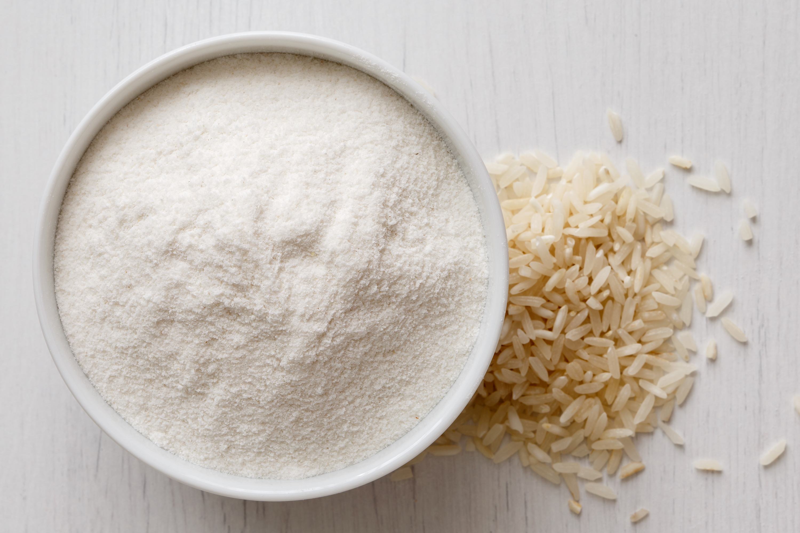
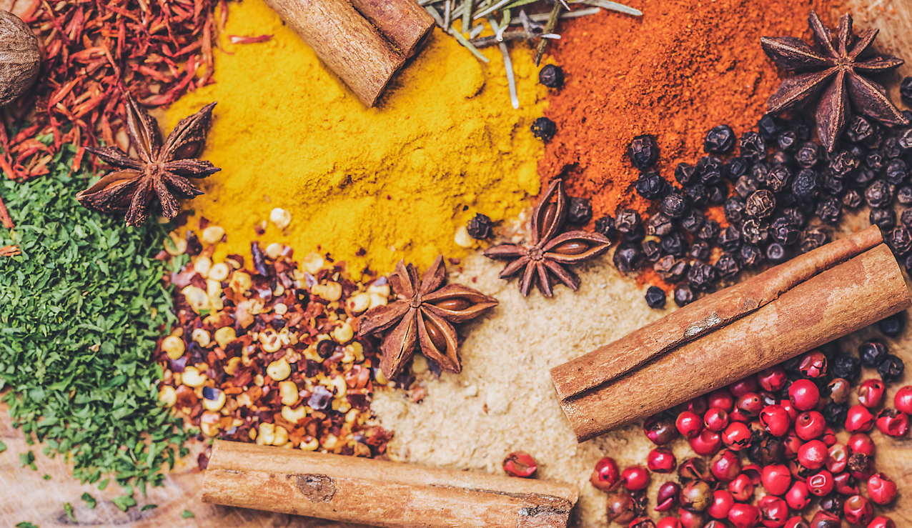
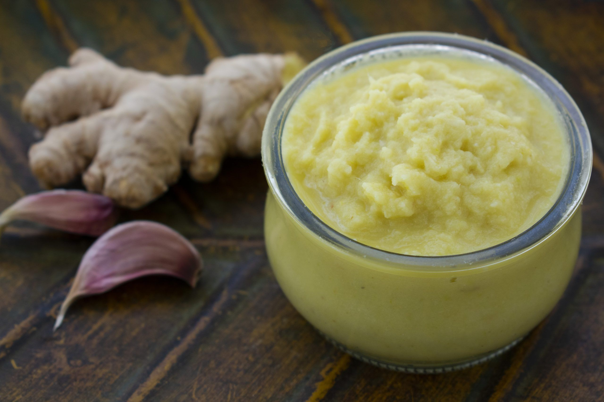

| Rice |
A grain grown around South Asian region and the main ingredient in most of the foods around this region. |
 |
| Rice Flour |
Finely milled white rice, which is used in making momo. Also called ground rice or rice powder. |
 |
| Spices |
A spice is a seed, fruit, root, bark, or other plant substance primarily used for flavoring or coloring food. Spices are sometimes used in medicine, religious rituals, cosmetics or perfume production. |
 |
| Ginger-Garlic Paste |
A paste of mixer of ginger and garlic. It adds taste to the food and makes the food delicious. It is one of the most important ingredients around the South Asian region. |
 |